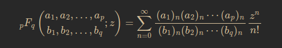
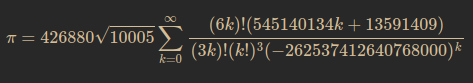
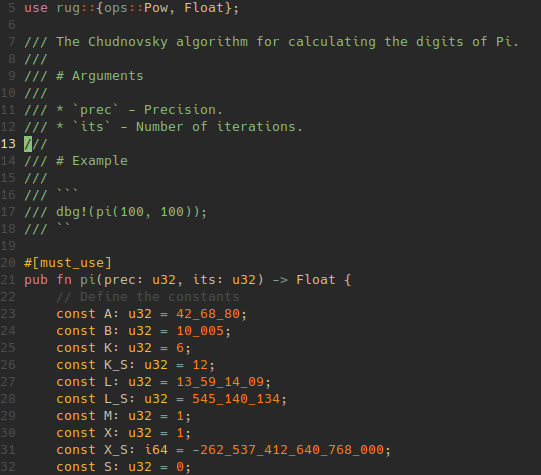
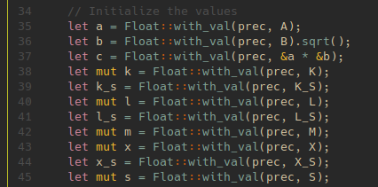
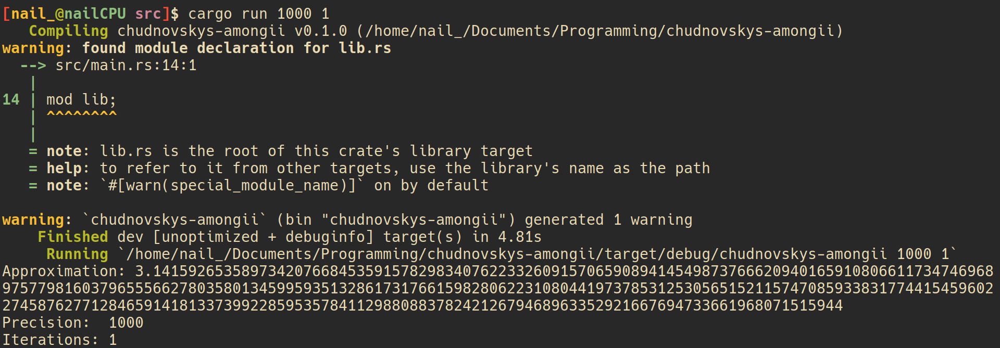

---
13 // Oct // 2023
3 min
Pi has always been 3.14159 to me and to everyone else really, it's only nerds who'd want to know pi up to its 100th or 1000th digit while its your supernerds who'd be searching for pi up to the millionth digit and well, I'm a supernerd (when I want to).
So I was bored one summers day and way too done with the monotony of math and physics revision and opened up YouTube and the first video that piqued my interest was Stand-Up Math's legendary video of finding Among Us in Pi. This Einsteinian ingenuity of a video warrants its own place in the annals of history for finding the meaning of life, death and everything in between but also raised a question in my head: how many Amongii are there in pi?
There are 4 amongii in the first million digits of pi, with the crewmate facing both to the left and the right. It took around 21 milliseconds to calculate and it really didn't take that long.
The code consisted of a function converting the first million digits of pi (removing the "3."") into binary then writing the binary output to a text file. Another function read from the file to search for the string "0111110011110101" or "1010111100111110". This was quite easy but it led me to a much cooler discovery.
Chudnovsky's Algorithm
Chudnovsky's Algorithm was formulated by the Chudnovsky brothers in 1988 based on Ramanujan's pi formulae and goddamn is it interesting. I'm no mathematician but I'll attempt to explain it the best I can.
So, using a generalized hypergeometric function:

The Chudnovsky algorithm uses the 9th Heegner number ($-163$) which is an integer which is divisible by no square number other than 1 and is part of a finite field of imaginary numbers as well as the $j$-function which is a function of a complex variable on the imaginary, positive-only plane (also known as the upper-half plane) of complex numbers to result in:
This is the Chudnovsky's algorithm which probably works on a graphing calculator or on pen and paper but it needs some work to be applied on Rust. More on this later.
My Attempt
I've recently become enticed with Rust and its intricacies, almost unhealthily as well. It's speed and simplicity paired with how readable it is. It's like if you took C's control, power and processing and took Python's syntax and readability and created a love child. But forget that ramble real quick and let's delve into writing Chudnovsky's Algorithm in Rust.
I mentioned prior that I'm no mathematician, so translating mathematical equations into code was a bit daunting. However, Rust's made the process more manageable. In crafting this implementation, I began by initializing variables to accommodate the dynamic nature of Chudnovsky's algorithm. Using the Float type from the rug library (a Rust library for large numbers), I could conduct precise calculations, ensuring accuracy even with an extensive number of decimal places.

The core of Chudnovsky's algorithm lies in a series of iterations, each progressively searching the approximation of pi. Within each cycle, I systematically filled constants and then iterated. This step-by-step refinement is fundamental to the accuracy, and is where Rust's syntax shone through, making the code both comprehensible and efficient. Additionally, Rust's type system ensured that every operation maintained the requisite precision, thanks to the inherent traits of the `Float` type.

To enhance utility, this thing runs on CLI using `env`, allowing to specify the desired precision and number of iterations as straightforward command line arguments. Moreover, basic error handling exists, ensuring that a user can't shoot themselves in the foot.

It's not perfect sure, but it sure does work. This small project really helped me wrap my head around Rust and Math (even though Math is a fluke in school); go ahead and give it a try!
Source Files
Github PageFurther Reading
Chudnovsky's Algorithm on WikipediaStand-Up Math's Video
Rust's Rug Library
---
By nail_
Go back to posts